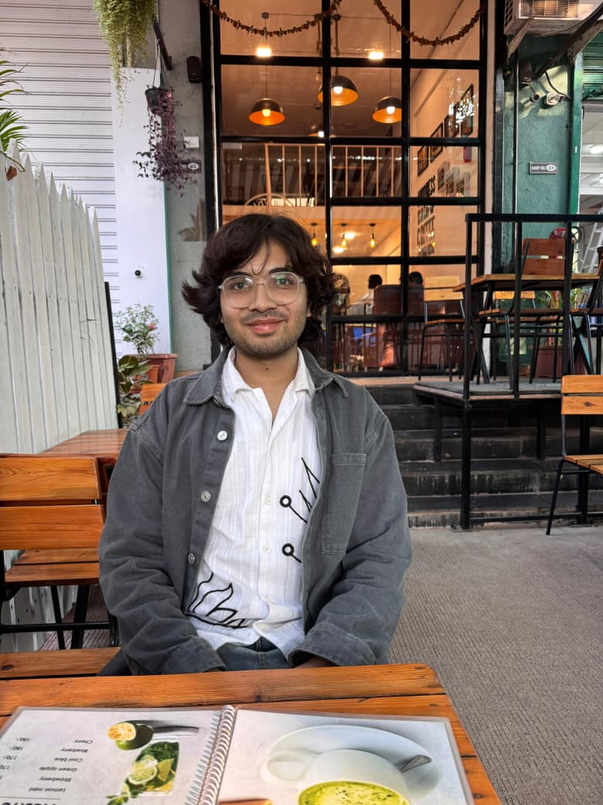

Computer Engineering Student • Engineer & Literary Architect
First-Year B.Tech Student at MIT Academy of Engineering (Software Engineering) • Building at the intersection of code, data, and design.
January 4, 2007 (Age 19)
First Year (FY) B.Tech Computer Engineering (Software Engineering)
MIT Academy of Engineering (MIT AOE), Pune
10 + 2 (Science Stream • Engineering Focus)
Writing, Reading, Modeling, Aesthetic Design
India
Completed Essentials of Data Science 1 & 2, focusing on foundational data analysis, data handling, and real-world application of data-driven decision making.
A first-year Computer Engineering student with a growing foundation in software development and data science. Actively building projects that merge technical efficiency with aesthetic design. Known for combining analytical thinking with creative expression, particularly in writing and digital experiences.
A creative exploration blending noir aesthetics with 19th-century prose, expressed through poetry, essays, and digital storytelling. A reflection of narrative depth in a modern digital form.